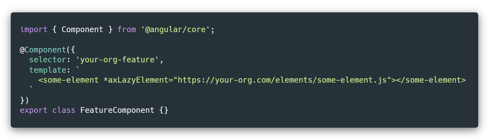

Angular Extensions - Elements
The
@angular-extensions/elements
is the easiest way to lazy load Angular Elements or any other web components
in your Angular application!
double_arrow Get started
-
Install
npm i @angular-extensions/elements
-
Add
import { LazyElementsModule } from
'@angular-extensions/elements';
-
Append
LazyElementsModule to the imports: [] of
your AppModule
-
Add new
schemas: [] property with
CUSTOM_ELEMENTS_SCHEMA value to
@NgModule decorator of your AppModule
-
Use *
axLazyElement directive on an element you wish to load
and pass in the url of the element bundle

style Use cases
- Microfrontends
- Sub-applications
- Heavy 3rd party components (like rich text editors,...)
playlist_add_check Features
- Lightweight
- Simple API
- Loading (and error) indicator support
- Lazy by default
- Uses standard Angular template bindings for props and events
- Great performance (elements are guaranteed to load only once)
- Pre-configuration & pre-loading